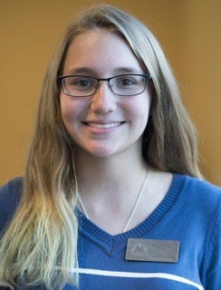

CREATE TECH
For 9th - 12th Grade Girls
DECtech is piloting two programs for local high school girls!
Our CREATE Tech Instructors
 Alex is a Junior studying Computer Science at Mines. She has experience in graphic design, web design, and mobile application design. Her passion for cultivating diversity has led her to study and work abroad in Europe, lead outreach events in her community, and work as a teaching assistant on the Mines campus. She currently is leading the Create program at Green Mountain High School and looks forward to learning with the next generation of women in STEM!
Alex is a Junior studying Computer Science at Mines. She has experience in graphic design, web design, and mobile application design. Her passion for cultivating diversity has led her to study and work abroad in Europe, lead outreach events in her community, and work as a teaching assistant on the Mines campus. She currently is leading the Create program at Green Mountain High School and looks forward to learning with the next generation of women in STEM!
Alex is leading a C++ class for Green Mountain's after school coding club. Check out the sites she's using for her curriculum:
https://alexrpollock.wordpress.com/ and https://codeanywhere.com/.
For a printable flyer (pdf) about the current session of CREATE TECH, please click here.
Rachel is a junior studying Computer Science at Mines. She had always been interested in computer science but did not pursue it until college, where she absolutely fell in love with programming. She wishes she'd had the same opportunities as this group of girls will to begin coding at a young age. She has always loved teaching, and is so excited to be working with DECtech to pursue this passion.
Rachel is working with the Girl's Coding Club at Lakewood High School.
If you would like to be placed on the contact list for the CREATE TECH program, please complete the short form here.